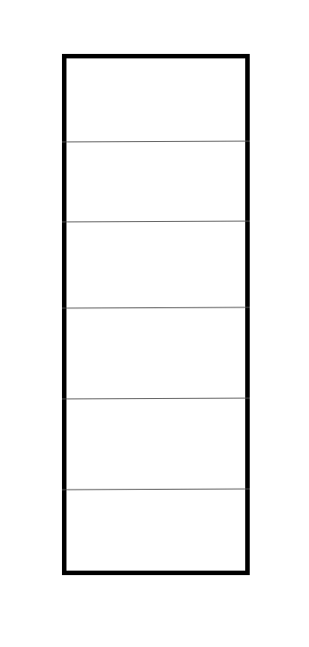

Final Project Guidelines
This webpage is a web version of the guideline document posted to Canvas.
The goal of the final project is to provide you with an opportunity to apply the concepts you learn to create a cohesive, functional, practical website. Any website that meets these requirements and demonstrates a sufficient amount of effort and understanding of course content will earn a full grade for the project portion.
Requirements
Your website must meet one of the following minimums for the “scale” of your project:
3 distinct webpages with unique content and layout
6 “typical computer screens” worth of unique content
(This can be all on one page or on different pages)
Content that is highly interactive
(Also known as a “web app”)
Your website must be completely styled in a cohesive theme/layout that demonstrates your CSS knowledge. Simply having text content in black-and-white that scrolls down the page does not meet this requirement.
Your site must have some component that demonstrates your knowledge of JavaScript. This can be achieved through interactivity, generating content by fetching data, or some other way.
Your site should adhere to the best practices and rules that are taught in the course. The most important points to consider are:
- Clean, readable code/markup
- Proper use of semantic HTML
- Layout that is responsive to different screen sizes and zoom levels. In other words, your site should look decent when viewed on any computer screen, and not hardcoded to your own screen size.
Other Notes
You should consult course instructors for guidance on whether certain project ideas are feasible to implement in the time you're given, especially if you want to make a “web app”.
You are allowed to use JavaScript packages to achieve complex data fetching or interactive behavior that would be difficult to accomplish otherwise, but you must consult with an instructor first.